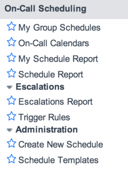

On-Call Scheduling
| |
Note: This article applies to Fuji and earlier releases. For more current information, see On-call Scheduling at http://docs.servicenow.com
The ServiceNow Wiki is no longer being updated. Visit http://docs.servicenow.com for the latest product documentation. |
Contents
1 Overview
On-call scheduling provides a way to determine which member of a user group is available to complete a task. For example, finding the right person to assign an incident. It does this by rotating an on-call position within some or all members of that group of users on a regular basis.
On-call scheduling can help answer questions like:
- For a specific group, who is the primary contact person right now?
- Who is the primary contact at any given time?
- How do I escalate notifications for this group?
- When am I on-call for this group this year?
Administrators can activate the On-Call Scheduling application starting with the Eureka release.
| |
Note: On-Call Scheduling replaces Group On-Call Rotation starting with the Eureka release. If you are using an earlier release, see Group On-Call Rotation - Versions Prior to Eureka. For information about upgrading to Eureka from an earlier version, see Upgrading to On-Call Scheduling. |
2 Concepts
On-call schedules can contain:
- Rota: the calendar definition of on-call shift hours, personnel lists, and escalation settings such as escalation type and a catch-all for a group. Rotas define the time slots within which the duty schedule is active.
- Rosters: a list of users who are part of the schedule. Rosters define which users are assigned to which time slots within the rota.
- Schedules: the basic entity from which rotas and rosters are defined. For example, a company that wants coverage of tasks around the clock would use a 24-7 schedule. Companies that provide support around the globe, could use a follow the sun schedule to cover different time zones across different continents.
- Holidays: time off for participants in a rota can be planned and managed in the on-call calendars.
- Escalations: the chain of persons and the actions to be taken, for example, when a P1 incident comes in.
- Notifications: can be sent to remind people on-call of their obligations or if an important event occurs, either by sending emails with on-call scheduling, or by sending a voice mail or an SMS with Notify.
3 Roles
| Role Title [Name] | Description |
|---|---|
| Rota Administrator [rota_admin] | Users with the rota_admin role can create new rotas and edit or delete existing rotas. They can also manage all other aspects of on-call rotas. |
| Rota Manager [rota_manager] | Users with the rota_manager role have delegated access to a specific group's rota and can manage this group's rota and associated data. They cannot edit or delete rotas. |
For more information, see User Roles.
4 Menus and Modules
The On-Call Scheduling application contains these modules.
|  |
|
{kind=link}
5 Activating On-Call Scheduling
Administrators can activate the On-Call Scheduling plugin.
| Click the plus to expand instructions for activating a plugin. |
|---|
|
If you have the admin role, use the following steps to activate the plugin.
|
6 Enhancements
6.1 Eureka
- An enhanced on-call wizard feature is available. The previous functionality, Create New Rota and Manual Rota Creation, is deprecated.
- Workflows for on-call assignment of incidents and sending notifications in the case of escalations have been introduced. Notification rules on rotation schedules are deprecated. They have been superseded by these workflows. When an instance running Group On-Call Rotation upgrades to Eureka, some data from the notification rules is migrated to other tables. The information migrated is recorded in the Notification rules - migration report, which can be run by the administrator in Reports > View/Run.
- The Rotate through rosters option has been added to the My Group Schedules module as part of the escalation settings on the rota form. This method of going through the escalation chain facilitates users who may not be the first on-call person for a roster to identify themselves easily when they are on-call. When more than one roster is available for a rota, the option Rotate through rosters is automatically activated.
- The method for changing rotas and rosters through the the on-call calendar view has been improved.
- An option has been added to the schedule report that prints a PDF file showing an overview of the on-call persons per group for a specified period.
- Domain separation is supported. The rota group's domain is used rather than the logged in user's domain.
- When you use Notify with on-call scheduling, additional workflows enable users to receive notifications and accept or reject auto-assignment via SMS.